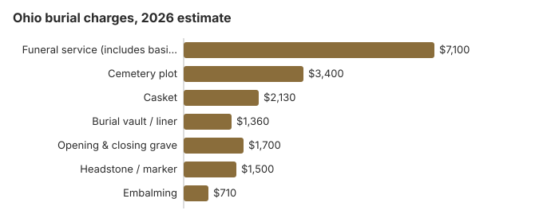

Burial Costs in Ohio
A full burial in Ohio comes to roughly $16,190 to $20,690 in 2026 by this page's own numbers. The funeral service package runs about $7,100, the cemetery plot about $3,400, a casket $2,130, the vault or liner $1,360 and grave opening $1,700, with a headstone adding $500 to $5,000. Ohio's thousands of township cemeteries are the main reason the plot line can come in well under the average.
Complete Burial Cost Breakdown
| Line item | Ohio estimate | Typical range |
|---|---|---|
| Funeral service (includes basic services and professional services) | $7,100 | $5,325 – $9,230 |
| Cemetery plot | $3,400 | $1,700 – $6,800 |
| Casket | $2,130 | $710 – $5,680 |
| Burial vault / liner | $1,360 | $800 – $10,000 |
| Opening & closing grave | $1,700 | $500 – $3,000 |
| Headstone / marker | $1,500 | $500 – $5,000+ |
| Embalming | $710 | $500 – $1,500 |
About these numbers: we built every Ohio figure here from our own model, not from prices Ohio cemeteries or funeral homes gave us, so use them for budgeting rather than as a quote or advice. The estimating method and its limits are both published.
State sources: Ohio Rev. Code § 517.07.

What an Ohio family pays for burial, cemetery fees included, depends on the service type and the cemetery. Adding up the rows in the table above, a traditional funeral and burial in Ohio comes to roughly $16,190 to $20,690, and the headstone accounts for most of that spread. The $7,100 funeral service row is a bundled package; the basic services fee inside it, the one charge a family cannot decline, had a national median of $2,495 in the NFDA 2023 General Price List Study. The casket estimate is $2,130, within a $710 to $5,680 range, and the FTC Funeral Rule lets you buy the casket from any seller without paying the funeral home a handling fee. Opening and closing the grave is estimated at $1,700, but each Ohio cemetery sets its own charge, anywhere from about $500 to $3,000.
Burial and Direct Cremation Options in Ohio
- Many families choose cremation instead. Our Ohio cremation estimate puts direct cremation at about $1,700 (a $1,190 to $2,380 range) and cremation with a service at about $5,600, usually with an alternative container rather than a casket.
- Green burials in Ohio often run about $1,500 to $5,000. Learn about green burial
The gap is large: direct cremation costs about $5,400 less than the funeral service row alone, before a single cemetery charge. That helps explain why this site’s rounded Ohio cremation rate is about 55%, though Ohio still trails the 63.4% national rate NFDA projected for 2025.
Keeping an Ohio Burial Affordable
Planning ahead keeps Ohio burial costs in check, and some families may find financial help with funeral expenses through public or community programs, especially if they are planning a funeral with no insurance coverage:
- Look into local assistance programs: Ohio has legal provisions for indigent burials, but support is limited and usually handled by local governments. In some areas, community organizations may also offer emergency financial assistance.
- Ring the township fiscal officer: Ohio has township, county and fraternal cemeteries in nearly every county, and many have no website at all, so the phone is the only way to learn what a lot costs.
- Know who pays when there is no money: under Ohio Rev. Code § 9.15, the township or city where the person lived pays for burial or cremation when the body is unclaimed or is claimed by someone with income at or below 150% of the federal poverty line, and the grave must get a marker with the person’s name and date of death.
- Price direct burial: immediate burial with no viewing or embalming removes the $710 embalming estimate and much of the service package, and every Ohio funeral home has to list its direct burial price on the General Price List.
- Check benefit eligibility: Eligible family members may receive the Social Security Administration's $255 death benefit, and FEMA may help cover funeral costs after federally declared disasters.
For comprehensive cost-saving strategies, see our affordable funeral options guide, use our funeral cost calculator to compare prices by state, or payment assistance programs for financial assistance and other ways to find financial help covering funeral expenses.
Regional Context for Burial in Ohio
Prices still vary inside Ohio. A funeral home in Columbus or Cleveland and one in a small county seat can quote very different totals for the same package, and cemetery plots usually cost more where land is expensive, so the statewide figures above are a starting point rather than a quote. A phone call to two or three Ohio providers is usually enough to see where the price points sit and spot package markups. The FTC Funeral Rule requires a funeral home to give price information over the phone and to hand you its General Price List when you ask about arrangements in person, so you do not have to visit before comparing. If you need a death certificate for banks or insurers, the Ohio Department of Health charges $21.50 per certified copy (ODH ordering page).
Burial Resources
- Funeral Consumers AllianceNonprofit consumer advocacy for funeral pricing
- Headstone & Monument GuideCosts, types, and buying tips
- Green Burial OptionsEco-friendly and natural alternatives
- Best Online Casket RetailersCaskets bought online often cost less
- Best Burial InsuranceCompare plans to cover burial expenses
Compare Funeral Costs
- Average Funeral Cost in 2026National cost breakdown with real prices
- Cremation vs. Burial Cost ComparisonSide-by-side price comparison to help you decide
- Funeral Cost BreakdownEvery line item explained: know what you're paying for
- Cheapest Funeral OptionsLower-cost alternatives, with typical price ranges
- Direct Cremation: Most Affordable OptionNFDA 2023 median $2,645 with a family-supplied container (latest available)
- How to Compare Funeral PricesStep-by-step guide to getting the best price
Frequently Asked Questions About Planning Ahead
How is an Ohio burial bill made up?
A full burial in Ohio comes in at about $7,100 for the funeral service, $3,400 for the cemetery plot, $2,130 for a casket, $1,360 for an outer burial container, $1,700 for opening and closing, and $500-$5,000 for a grave marker. For comparison, NFDA's 2023 national median for a funeral with viewing and burial is $8,300, and that figure leaves out the vault and every cemetery charge. Ohio totals generally land between $16,190 and $20,690 depending on choices.
Will an Ohio cemetery make you buy a vault?
No Ohio statute requires a vault, but most Ohio cemeteries, township grounds included, write an outer container into their rules so graves do not sink. Expect $800 to $10,000 for one; this page's table uses $1,360 as the Ohio average.
What is the cheapest burial an Ohio funeral home sells?
An Ohio direct burial, sold by many funeral homes as immediate burial, leaves out embalming, the viewing and the service, which makes it the least expensive way to bury. Natural burial costs a little more and is allowed in a growing set of Ohio cemeteries that accept unembalmed bodies in biodegradable containers.
How should you compare Ohio cemeteries?
An Ohio cemetery sends its own bill, apart from the funeral home, and the marker usually arrives on a third. Township, county and fraternal grounds are often listed only through the township or county office, and a lot there frequently costs far less than one in a commercial memorial park.
What gets added on top of the Ohio burial estimate?
Each item is listed in the first answer. On top of the $16,190 to $20,690 range, an Ohio funeral home passes through cash advance charges: certified death certificates, the obituary notice and flowers. Body preparation for a public viewing usually includes embalming, estimated at about $710 in Ohio (a $500 to $1,500 range), plus cosmetic work, and many Ohio funeral homes require embalming before a public viewing.
Can you have a green burial in Ohio?
Green burial is possible in some parts of Ohio, but not in every region. Ohio also allows home burial on private property when local zoning approval is obtained. Several Ohio cemeteries offer a hybrid section instead of an all-natural ground. Check our green burial guide and call local cemetery options to confirm what they currently offer.
What rights do you have when making arrangements with a funeral home in Ohio?
When making arrangements, the funeral provider must give you a General Price List before you select services, as required by the FTC Funeral Rule. This helps you compare funeral arrangements and avoid paying for items you do not want.
Who helps with paperwork after a death in Ohio?
The funeral director usually helps obtain certified copies of the death certificate. Family members often need those copies for a bank, insurance claims, and the Social Security Administration.
What paperwork is needed for cremation in Ohio?
If cremation is chosen, the funeral director or funeral professionals will require a Cremation Authorization Form signed by all legal next of kin before cremated remains can be released or disposition can proceed. If there is disagreement among legal next relatives, the process can be delayed until it is resolved.
How can you pay for funeral costs in Ohio without leaving the bill to relatives?
Planning ahead can make costs easier to manage through burial insurance, final expense insurance, or a payable-on-death bank account. These options can help cover funeral ceremony expenses without placing the full burden on family members, and if you buy a preneed contract from an Ohio funeral home, ask in writing whether it is funded through a trust or an insurance policy and what happens to the money if you move or cancel.
Are there veterans' benefits that help with funeral expenses in Ohio?
Eligible veterans and their families may qualify for veterans affairs burial benefits, including a burial allowance in some cases. Ask the funeral director and staff whether these benefits apply and what documentation is needed.
More for Ohio
Ohio township lots, death certificates and hardship help
The same township statute that sets lot sales has a hardship clause many families never hear about. Under Ohio Rev. Code § 517.07(A) (effective April 3, 2025), when the head of a family living in the township applies, the board of township trustees must deliver a deed for a suitable lot free of charge if, in the board's opinion, payment would be oppressive given the family's circumstances. It is the board's judgment, not an automatic right, but the application costs nothing. The same section lets townships set a use-it-or-lose-it term of 20 to 50 years on a lot; if the township reclaims an unused lot it must offer the owner 80 percent of the purchase price or another lot, so check the deed on any older family plot before assuming it is still yours.
Certified death certificates in Ohio cost $21.50 each from the Ohio Department of Health, a fee charged for the search whether or not a record is found (ODH Vital Statistics, checked October 29, 2026). Local health departments set their own price within a range of about $21.50 to $27; Summit County charges $22 a copy and Cleveland charges $25. ODH online orders are processed within five business days, while mail orders typically take four to six weeks, so ordering in person at a local health department is the fastest route when an insurer is waiting. Five copies at the state rate come to $107.50.
Ohio also keeps the deceased person's Social Security number off certified copies for the first five years unless an eligible person, such as the spouse, the executor or a county veterans service officer, asks for it with proof of identity (Ohio Rev. Code § 3705.23(A)(5)). Pension and insurance claims sometimes need the number, so say so when you order.
Who regulates an Ohio burial, and where to get help
The Ohio Board of Embalmers and Funeral Directors (614-466-4252) handles license checks and complaints about funeral homes. Cemeteries in Ohio can answer to a different regulator, and township cemeteries are run by the township trustees themselves, so a dispute over a lot usually starts with whoever operates the cemetery.
The Funeral Consumers Alliance does not list Ohio among the nine states that make a funeral director part of every burial, so an Ohio family can arrange the plot, the grave opening and the accepted container directly with the cemetery. Township cemeteries are worth checking first: Ohio Rev. Code § 517.07 directs township trustees to sell lots at a reasonable price as demand requires, and a buyer who meets the terms of sale can receive a deed, recorded by the township fiscal officer at the buyer's expense.
Once the permit is issued, the burial can take place. The 24-hour wait in Ohio Rev. Code § 4717.23 applies only to cremation.
When the family cannot pay
If a body is unclaimed, or the person claiming it has household income at or under 150% of the poverty line, the township or city where the person lived pays for the burial, and the state embalmers board reimburses part of that cost while its fund lasts (Ohio Rev. Code § 9.15; Ohio Admin. Code 4717-17-06). That is separate from the § 517.07 hardship deed for a free township lot described above.
Veterans
A national cemetery grave, its opening and closing, and the marker are free for an eligible Ohio veteran. Ohio has two VA national cemeteries open for burials, Dayton National Cemetery (937-268-2221) and Ohio Western Reserve National Cemetery in Rittman (330-335-3069), plus the state's Ohio Veterans Home Cemetery in Sandusky (419-625-2454) (source: VA National Cemetery Administration). The funeral home schedules through the VA's National Cemetery Scheduling Office at 800-535-1117.
Before you sign anything in Ohio
- Put the funeral home's General Price List next to the cemetery's own price sheet before agreeing to anything.
- Ask whether the cemetery requires a vault or grave liner before you buy one.
- Ask the township whether it owns a cemetery, and whether it would grant a hardship lot under § 517.07.
- For a veteran, check eligibility with Dayton or Ohio Western Reserve before paying for a private plot.
- Report a funeral home that misleads you about prices to the board at 614-466-4252.